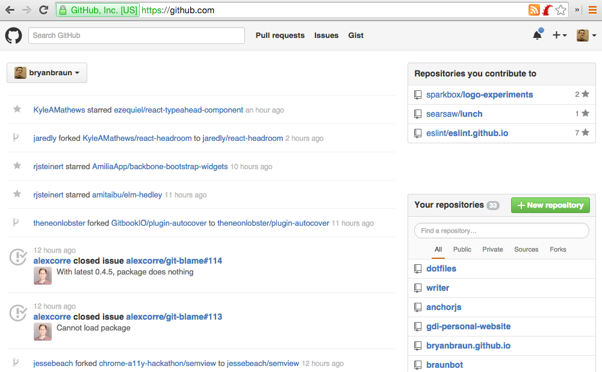

Building a Personal Website with Github Pages
Taught by Bryan Braun / @BryanEBraun
Why a Personal Site?
- Claim your name
- A place to experiment
- A place to write
- Control your message.
- Build it before you need it
100s of Options
Wix - Wordpress - Joomla - Squarespace - Django - Drupal - Rails - Express - Sinatra - Hexo - Jekyll - Octopress - Postachio - Hugo - Weebly - Pancake - Pelican - Middleman - Blogger - Google Sites - October - Ghost - Harp - About.me - Yola - Assemble - Craft - Tumblr - Hubpress - Grav - Medium - Hubpages - Svbtle - Posthaven - Pico - Statamic
...
Github Pages
What is it?
It's free static site hosting provided by Github.
Why are we interested in Github Pages?
- Uses professional developer workflows
- Full control of your design & content
- Embraces openness
- Versioned
- Distributed (encourages a local backup)
- Benefits of Static Sites
- Secure
- Scalable
- Portable
- Free
The Case Against Github Pages
- You can't use it to experiment with Backend / Databases / Caching / Servers / Ops
- Favors control over convenience.
- No CMSs. Advanced Github pages sites use static site builders like Jekyll
- Web interface is lacking: Github is designed for code management, not content management.
- Some features must use 3rd party JS plugins
Sites using Github Pages
Sites using Github Pages

Sites using Github Pages
First... What is Github?
Github: Profile Page
Github: Newsfeed
Github: Project Page
Getting Started: Github Pages
Getting Started: Github Desktop
It is...
- A desktop application for syncing your local code with the code on Github.
- A user interface for Git, the version control tool.
Download and Instructions at: https://desktop.github.com
Let's Reflect
What have we done?
- We now a have live webpage running on Github Pages.
- We know how to use Github & Github Desktop to publish a website.
Limitations of Static Sites:

Limitations of Static Sites:
Writing content in HTML can get tiresome
Solution: Static Site Generators
- They try to eliminate the pain of static sites
- They are most useful for sites with many pages.
Jekyll - Middleman - Hexo - Hugo - Nanoc - Pelican
(compare options at https://www.staticgen.com/)
Blogging is easier with Markdown
What is Markdown? [Link]
Jekyll is a Static Site Generator
Why are we interested in Jekyll?
- Github Pages Integration
- Large Plugin Ecosystem
- Secure / Easy to maintain
- No comment spam
- Ease of migration
- Free
Jekyll Setup
Using Jekyll with Github Pages
Installation Instructions (Mac)
Installation Instructions (PC)- not for the faint of heart
Hands On
What do you want to build?
Ideas:
- Putting my "Hello" page on your Github Pages, and customizing it for you.
- Build your own static webpage / website
- Set up a custom domain name
- Set up a Jekyll site
- Use a different static site builder to set up a site
- Ask around